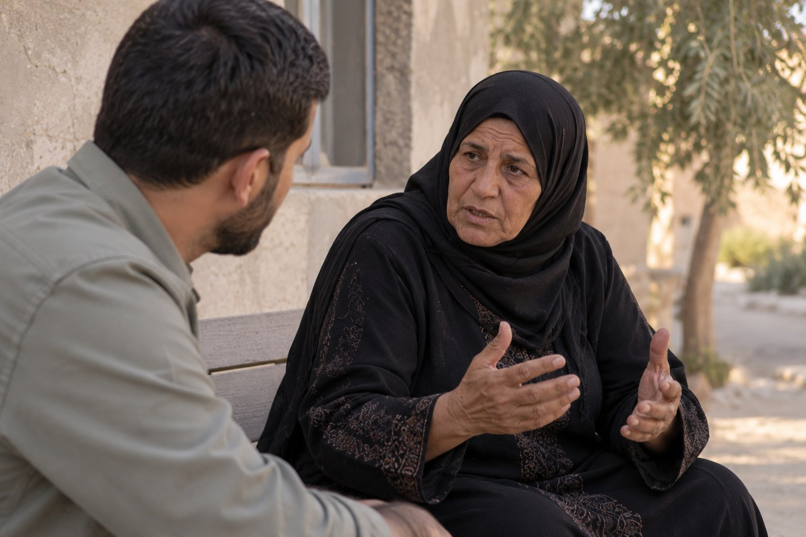

مسار إحالةٍ يديره السكان أنفسهم
الحال
أربعة مخيمات، ولا طريقة واحدة يثق بها الناس للإبلاغ عن الخطر.
ما فعلتُ
جلستُ مع لجان المخيمات أولاً، ثم صمّمنا معاً مساراً يبدأ من الجار وينتهي عند الجهة المختصة.
ما تغيّر
بعد عام، صار أغلب البلاغات يصل عبر اللجان المحلية، لا عبر مكاتب المنظمة.